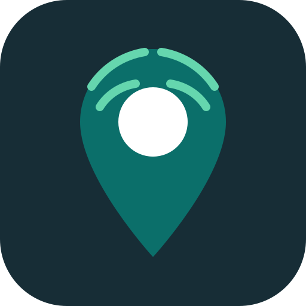

AcoustiMapEscala relativa orientativa; no equivale a dB físicos ni sirve para evaluar exposición.
Cada círculo rotula índice · mediciones. El borde se marca más cuanto más mediciones sostienen ese promedio; el color y el relleno dependen solo del índice.
Mapa y estadísticas: solo método v5. El histórico anterior se conserva por separado.
Sin calibrar
Señal del micrófono: sin lectura
Activa el micrófono para comprobar los ajustes.
No tapes ni roces el micrófono, y evita hablarle de cerca o con viento directo.
Entiende el impacto del ruido y cómo los datos ciudadanos ayudan a mejorar la ciudad.
La exposición prolongada al ruido puede afectar el sueño, la concentración y la salud cardiovascular.
AcoustiMap muestra diferencias relativas entre zonas para orientar nuevas mediciones con equipos calibrados.
Las mediciones anónimas aportan evidencia ciudadana para una planificación urbana más sostenible.
AcoustiMap no graba audio, no requiere login y guarda las coordenadas ancladas a una cuadrícula aproximada de 70 m.
Verde indica niveles bajos, amarillo niveles moderados y rojo niveles altos. El heatmap muestra patrones, no la ubicación exacta de las personas.
Mediciones ciudadanas, tendencias y reportes de tu zona.